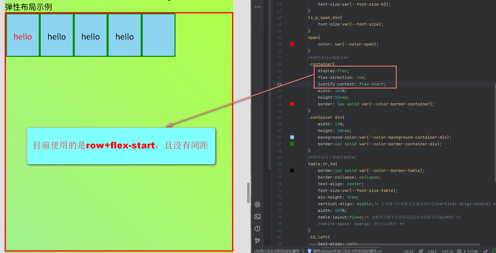
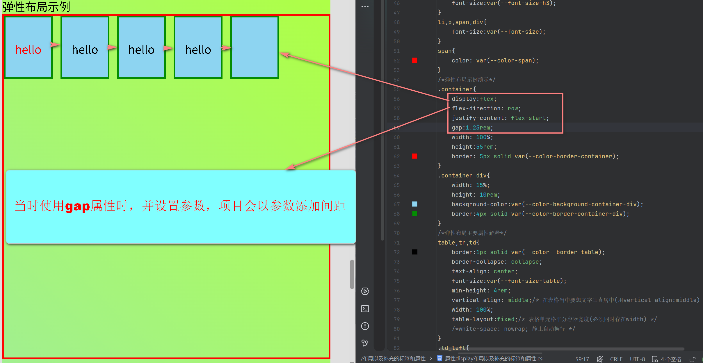
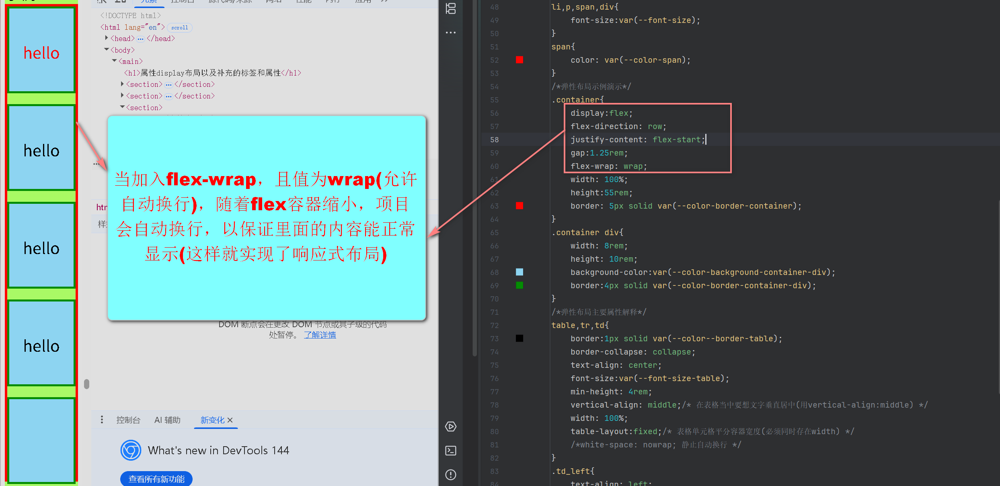
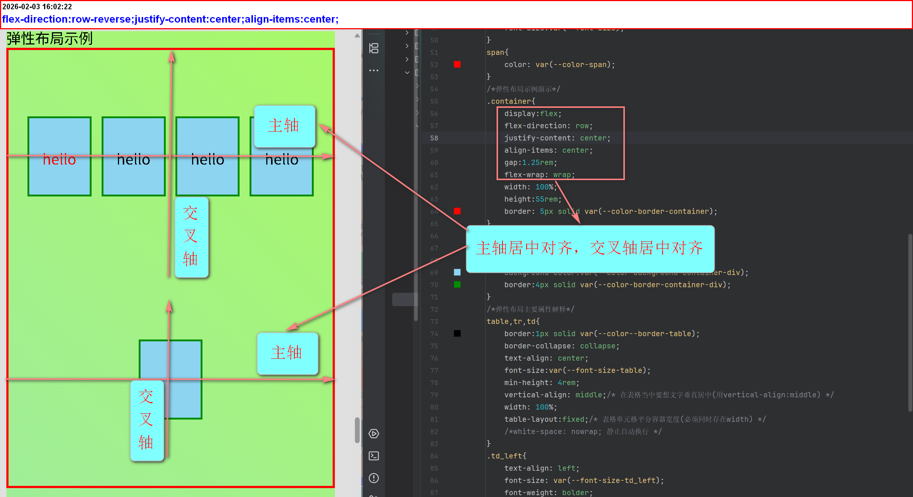
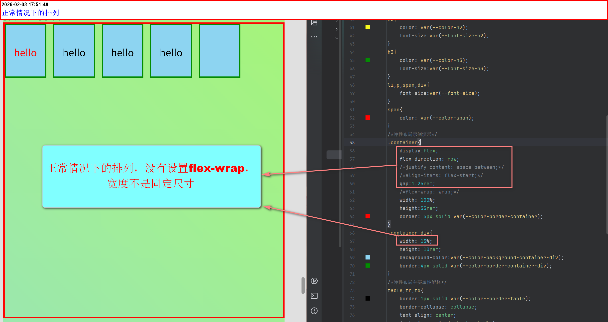
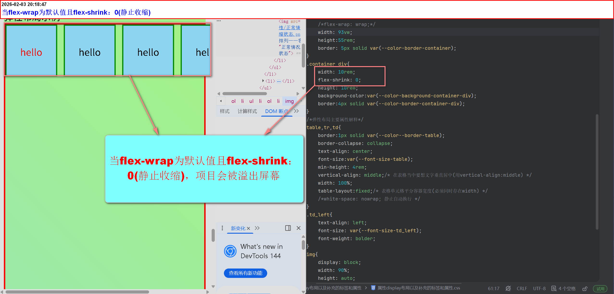
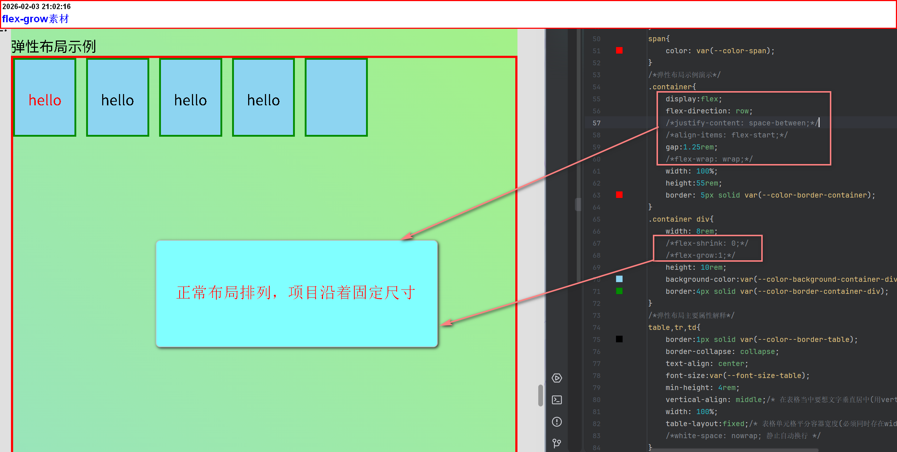

block(块级元素)
- 块级元素(div、section、p、nav、aside、main…………)默认在静态文档流中，都是垂直堆叠(从上到下排列)——也就是display:block
- 块级元素后续可以通过属性display更改(block[块级元素]、inline[内联元素]、flex[弹性布局]、grid[网格布局])
-
- address使用场景：作者/联系信息(默认状态为斜体)可以使用属性font-style:normal[改为不倾斜状态]
inline(内联元素)
- 内联元素(span、img、br、mark、i………………)默认在静态文档流中，都是在行框内水平排列，当行框宽度不足时，整个元素会移动到下一行继续水平排列——也就是display:inline
- 内联元素后续可以通过属性display更改
-
-
内联元素——初始状态为斜体(同样可以使用属性font-style:normal[改为不倾斜状态])
em使用场景：需要强调的词语(默认状态为斜体)
cite使用场景：书籍、电影、文章标题(默认状态为斜体)
dfn使用场景：首次定义术语时(默认状态为斜体)
var使用场景：数学公式、编程变量(默认状态为斜体)
-
flex(弹性布局)
- 任何容器元素+display:flex = flex容器
- flex容器的直接子元素 = flex项目
- 它可以是body或任何你想要用于布局的容器元素
-
flex最重要的概念(牢记)——flex容器相关属性
-
定位flex项目的两条轴线(主轴和交叉轴)
flex-direction值 主轴方向与起点 交叉轴方向 justify-content(控制) align-items(控制) 视觉类比 row(默认) 水平，从左到右 垂直，从上到下 水平排列分布 垂直对齐 横排书架上放书 row-reverse 水品，从右到左 垂直，从上到下 水平排列分布 垂直对齐 横排书架上放书，但是从右开始放 column 垂直，从上到下 水平从左到右 垂直排列分布 水平对齐 竖排书架上放书 column-reverse 垂直，从下到上 水平从左到右 垂直排列分布 水平对齐 竖排书架上放书，但从底端开始放 


-
flex-direction
- 主要有：row(默认)、row-reverse、column、column-reverse四个值
- 主要控制的是主轴方向(即所有flex项目会沿着主轴进行排列)
-
justify-content
该属性永远以主轴为核心
- 主要有：flex-start项目对齐到主轴的起点
-
值 作用 注意事项 图例 flex-start 把flex项目对齐到主轴的起点 会受到flex-direction影响
当值为row时：主轴的起点是最左边
当值为row-reverse时，主轴的起点是最右边
当值为column时，主轴的起点是最上面
当值为column-reverse时，主轴的起点是最下面")
")
")
")
flex-end 把flex项目对齐到主轴的终点 会受到flex-direction影响
当值为row时：主轴的起点是最右边
当值为row-reverse时，主轴的起点是最左边
当值为column时，主轴的起点是最下面
当值为column-reverse时，主轴的起点是最上面")
")
")
")
center 把flex项目在主轴上居中 会受到flex-direction影响
当值为row、row-reverse时：水平居中，但是项目方向会受两值的变化，不影响居中的效果。
当值为column、column-reverse时，垂直居中，但是项目方向会受两值的变化，不影响居中的效果。")
")
")
")
space-between 沿着主轴方向最边上的项目(即最左边项目，和最右边项目)，紧贴flex容器两侧，其余空间由剩下的项目平分
处理步骤：第一个项目贴在主轴起点，最后一个项目贴在主轴终点，剩余空间被项，项目之间的间隙平分会受到flex-direction影响
当值为row、row-reverse时，项目方向会受两值的变化。
当值为column、column-reverse时，项目方向会受两值的变化。")
")
")
")
space-around 沿着主轴方向最边上的项目(即最左边项目，和最右边项目)，离flex容器两侧有一定距离，其余空间由剩下的项目平分
处理步骤，将容器主轴空间等分给每个项目及其两侧的间隙，每个项目获得相同大小的周围空间，相邻项目的间隙会叠加，视觉效果：相邻项目的间隙是两侧的两倍会受到flex-direction影响
当值为row、row-reverse时，项目方向会受两值的变化。
当值为column、column-reverse时，项目方向会受两值的变化。")
")
")
")
space-evenly 将flex容器所有的空间，给项目平分(包括两侧)
处理步骤，将flex容器空间等分给所有间隙，间隙数量=项目数量+1,所有间隙大小相等(包括容器边缘)，视觉效果：所有间隙相等会受到flex-direction影响
当值为row、row-reverse时，项目方向会受两值的变化。
当值为column、column-reverse时，项目方向会受两值的变化。")
")
")
")
-
align-items
- 该属性永远以交叉轴为核心
- 与justify-content同样有：flex-start、flex-end、center
- 唯一的区别就是justify-content以主轴，align-items以交叉轴
- 以上的属性都会受到flex-direction的值影响(影响的状态与justify-content一样)
- flex-start:沿着交叉轴起点对齐
- flex-end:沿着交叉轴终点对齐
- center:沿着交叉轴居中对齐
-
gap
- 它可以在flex项目之间创建间距
- 使用它，在flex布局中基本不用再需要通过margin来制造间距
-


-
flex-wrap
- 使flex布局实现响应式布局
- 主要由:wrap、nowrap两值构成
- 当实现换行时，这时每一行都会有主轴与交叉轴
-
两值具体使用环境
-
wrap：当flex容器空间不足时，flex项目会自动排列到下一行
·当使用wrap值时，随着flex容器缩小，项目会自动换行，以保证里面的内容能正常显示(这样就实现了响应式布局)

-
nowrap：默认值，项目不会默认换行
·当使用nowrap或不添加flex-wrap(即使默认值)，随着flex缩小，项目会溢出容器，看不到

-
·因为每一行都有独立的主轴和交叉轴(这就意味着)
·换行项目的排列会受到(flex-direction、justify-content、align-items影响)
- ·flex-direction:row;justify-content:flex-start;align-items:center;(换行，水平排列，从左到右，主轴项目起点对齐，交叉轴居中对齐)
- ·flex-direction:row;justify-content:flex-start;align-items:flex-end;(换行，水平排列，从左到右，主轴项目起点对齐，交叉轴终点对齐)
- ·flex-direction:row;justify-content:flex-start;align-items:flex-start;(换行，水平排列，从左到右，主轴项目起点对齐，交叉轴起点对齐)
- ·flex-direction:row;justify-content:flex-start;align-items:space-between;(换行，水平排列，从左到右，主轴项目起点对齐，交叉轴项目两端紧靠flex容器两端，其余空间剩余项目平分)
- ·flex-direction:row;justify-content:flex-start;align-items:space-around;(换行，水平排列，从左到右，主轴项目起点对齐，交叉轴项目平分容器空间，相邻项目合并)
- ·flex-direction:row;justify-content:flex-start;align-items:space-evenly;(换行，水平排列，从左到右，主轴项目起点对齐，交叉轴项目平分容器空间)
- ……………………………………………………
一些示例：
-
·flex-direction:row;justify-content:flex-start;align-items:center;

-
·flex-direction:row-reverse;justify-content:center;align-items:center;

-
·flex-direction:column;justify-content:space-between;align-items:center;

-
·flex-direction:column-reverse;justify-content:space-between;align-items:flex-end;

-
·学习时发现的规律
flex-direction 主轴方向 交叉轴方向 换行方向(当flex-wrap：wrap时) 综合结论 row 水平(左→ 右) 垂直(上→ 下) 向下 换行方向是交叉轴的正方向，
row-reverse/column-reverse只是更改主轴方向row-reverse 水平(有→ 左) 垂直(上→ 下) 向下 column 垂直(上→ 下) 水平(左→ 右) 向右 column-reverse 垂直(下→ 上) 水平(左→ 右) 向右
-
-
align-content
- 控制所有行作为一个整体的对齐
- 有:默认值(stretch)、flex-start、flex-end、center、space-between、space-around、space-evenly
- 主要将默认值：stretch(尝试拉伸每一行，来填满交叉轴上的所有可用空间)——其他的都是老朋友了
- 相比[align-items]，align-content控制的是行，align-items控制的是行内的项目
-
-
flex最重要的概念(牢记)——flex项目相关属性
- 正常情况下的排列：项目会随着flex容器收缩而收缩(所以要以下属性控制收缩)
-
项目相关属性
-
flex-shrink
- 当flex容器空间不足时，flex项目相对于其他项目，在主轴方向上"缩小"或"被压缩"的“意愿”和能力
- 简单说，它是一个"收缩权重"，数值越大，项目就"越愿意"牺牲自己的空间来避免语出容器(flex-shrink值越大，它被扣减的空间越多)
- 项目宽度最好是清晰的尺寸单位，如绝对单位(px【但是不建议】相对单位(rem【非常不建议用%】))
-
核心要点
特性 说明 默认值 [1](大多数项目默认可以收缩) 生效条件 仅当当前所有项目的总宽度/高度>容器主轴尺寸时 取值 一个非负数字(可以是小数)。[0]表示"静止收缩" 对比 与flex-grow(分配剩余空间的权重)，是相反的操作 -
示例：




-
总结来说：
- 属性flex-shrink控制项目是否允许收缩(0则不允许)，值越大项目牺牲自己的空间越大
- 当使用 flex-wrap: wrap 时，如果我希望项目在换行后仍然保持固定尺寸，不被压缩，那么需要设置 flex-shrink: 0
- 可以使用选择器单独设置项目是否收缩
- 可以设置最小宽度，当收缩指定宽度的时候，将停止收缩(如果flex容器继续收缩，且不设置自动换行，项目将溢出屏幕)
-
flex-grow
- 主要作用，能使元素自动增长(在主轴上伸展)
- 默认值是0(不自动增长),值越大占据剩余空间的比例越大
-
图例：


·如图所示：flex-grow: 1 让项目有权按比例分配主轴上的剩余空间。如果它是唯一有 flex-grow 的项目，且没有 min/max-width 限制，那么它会占满所有剩余空间。
·同样可以单独设置
·可以设置最大宽度，当项目拉伸到指定宽度，停止拉伸
-
flex-basis
- 定义flex项目在主轴方向上的初始大小，即在分配剩余空间之前，项目应该占据多大空间
- 类似于width/height
-
但是优先级顺序：
flex-basis > width(在flex布局中)
但是，min-width/max-width 仍然会约束最终尺寸
-
align-self
- 与align-items的区别是它是作用于项目上的
- 它的值有：flex-start、flex-end、center(作用效果是一样的)
- 单项目交叉轴对齐
-
flex-basis、flex-shrink、flex-grow三属性的简写
- 它们简写属性是：flex(作用于项目上)
- 共有三个参数:flex-basis、flex-shrink、flex-grow
- 语法:flex:flex-grow flex-shrink flex-basis[在输入时，参数对应的属性
-
三个参数具体解释：
- flex-grow(必须存在)——放大比例
- flex-shrink(可选)——缩小比例
- flex-basis(可选)——基础尺寸
-
order
- 定义：用于控制flex项目或grid项目在容器中的视觉排列顺序
- 主要属性值为：整数(正整数、负整数、0[默认])
-
核心作用
- 改变项目的显示顺序，而不改变HTML结构
- 实现视觉重排不影响DOM顺序
- 响应式设计中调整不同屏幕尺寸下的项目顺序
- 设置在项目内，不是flex容器
-
主要用途：
- 响应式布局:不同屏幕尺寸下调整项目顺序
- 视觉强调:将重要项目提到前面
- 布局微调:不修改HTML结构的情况下调整顺序
-
与z-index的区别
order与z-index区别 方面 order z-index 本质 布局属性，控制平面新顺序 层叠属性，控制垂直顺序 前提 需要Flex/Grid布局 需要定位(position) 效果 谁在前谁在后 谁在上谁在下 运用 响应式重拍、视觉强调 模态框、下拉菜单、弹出层 相同点 属性 允许的值类型 示例 不允许的值类型 order 整数(integer) 0、1、-1、10 小数、字符串、百分比、关键字 z-index 整数(integer)或auto 0、1、-1、auto 小数(除了auto)、字符串、百分比、关键字
-
-
剩余两个属性值:baseline、stretch
核心解释 值 含义 视觉比喻 常用场景 baseline 所有项目的文本基线对齐 像笔记本的横线，文字都"坐"在同一条线上 表单标签、图标+文字混排、不同大小的按钮 stretch 拉伸以填满交叉轴的整个高度(或宽度) 像弹簧一样拉长，谈满所有空用空间 像高的卡片、导航项、瀑布流布局居中的填充 四属性对baseline和stretch的支持情况 属性 作用对象 支持baseline 支持stretch 原因分析 justify-content 主轴对齐 不支持 不支持 主轴处理项目间空间分布，不处理内容对齐 align-items 交叉轴单行对齐 支持 支持(目前是默认值) 专为交叉轴项目项目设计 align-content 交叉轴多行对齐 不支持 支持 处理行间空间，可拉伸但无法基线对齐 align-self 单个项目交叉轴对齐 支持 支持 继承align-items能力 -
flex-basis、flex-shrink、flex-grow、width/height区别总结
flex-basis、flex-shrink、flex-grow、width/height区别总结 属性 定义 作用时机 flex-basis 项目在主轴上的"起始尺寸" 在分配多余空间之前 width/height 项目的实际尺寸 CSS盒模型中的尺寸 flex-grow 分配多余空间的"扩张比例" 在计算flex-basis之后 flex-shrink 收缩空间不足时的"压缩比例" 在计算flex-basis之后 flex属性分类总结 属性 设置位置 作用 容器属性 父元素 控制所有项目的整体布局 display:flex 容器 创建flex容器 flex-direction 容器 主轴方向 justify-content 容器 主轴对齐 align-items 容器 交叉轴对齐 flex-wrap 容器 换行设置 gap 容器 项目间距 项目属性 子元素 控制单个项目的表现 order 项目 排列顺序 flex-shrink 项目 缩小比例 flex-grow 项目 放大比例 flex-basis 项目 基础尺寸 align-self 项目 单独对齐(交叉轴) flex 项目 flex-shrink、flex-grow、flex-basis简写
弹性布局示例
grid布局
一些css属性的补充
-
font-style
该属性控制的是字体的"样式变体"(蒸屉、斜体)或"几何变形"(斜体)
该属性共有normal、italic、oblique、oblique(angle)四个值[以下的名词"字体"可以理解为文本的字体类型(font-family)【微软雅黑、宋体…………】]：
- normal：使用字体的"正体"版本(可以理解为非斜体)
- italic：优先使用字体的"斜体"变体(如果存在)
- oblique：将"正体"版本机械地倾斜一个角度
- oblique <angle>：将"正体"版本精确地倾斜指定角度(angle[单位deg（角度）])
-
vertical-align
该属性控制的是调整行内元素在其所属的[行框(line box)]内的垂直位置
该属性共有：基线对齐(baseline[默认值]、sub、super)、相对行框对齐(text-top、text-bottom)、相对行框对齐(top、middle、bottom)、数值\百分比(长度值[px、rem……]、百分比值)
值 作用 适用场景 示例/说明 基线对齐 baseline(默认值) 元素的基线与父元素的基线对齐 文本对齐 同一行中不同字号的文字按基线对齐，看起来很整齐 sub 将元素对齐父元素的下标基线 数学/化学公式 H2O中的"2" super 将元素对齐到父元素的上标基线 数学/幂运算 X2中的"2" 相对行框对齐 text-top 元素的顶部与父元素字体的顶部对齐 图标与文字顶部对齐 让图标与这行文字的最高点对齐 text-bottom 元素的底部与父元素字体的底部对齐 图标与文字底部对齐 让图标与这行文字的顶最低点对齐 相对行框对齐 top 元素及其后代的顶部与整行的顶部对齐 多行元素顶部对齐 同一行内多个元素顶部对齐 middle 元素的中部与父元素基线+x-height/2对齐
在表格单元格中；内容在单元格内垂直居中最常用的垂直居中 表格单元格垂直居中，图标与文字垂直居中 bottom 元素及其后代的底部与整行的底部对齐 多行元素底部对齐 同一行内多个元素底部对齐 数值/百分比 长度值(如px、rem…………) 将元素从基线位置抬高(正值)或降低(负值) 微调图标位置 vertical-align:-3px;让图标下移3像素 百分比值(如：50%) 相对于元素自身的line-height计算偏移量 基于行高的精准控制 vertical-align:50%;上移自身行高的一半